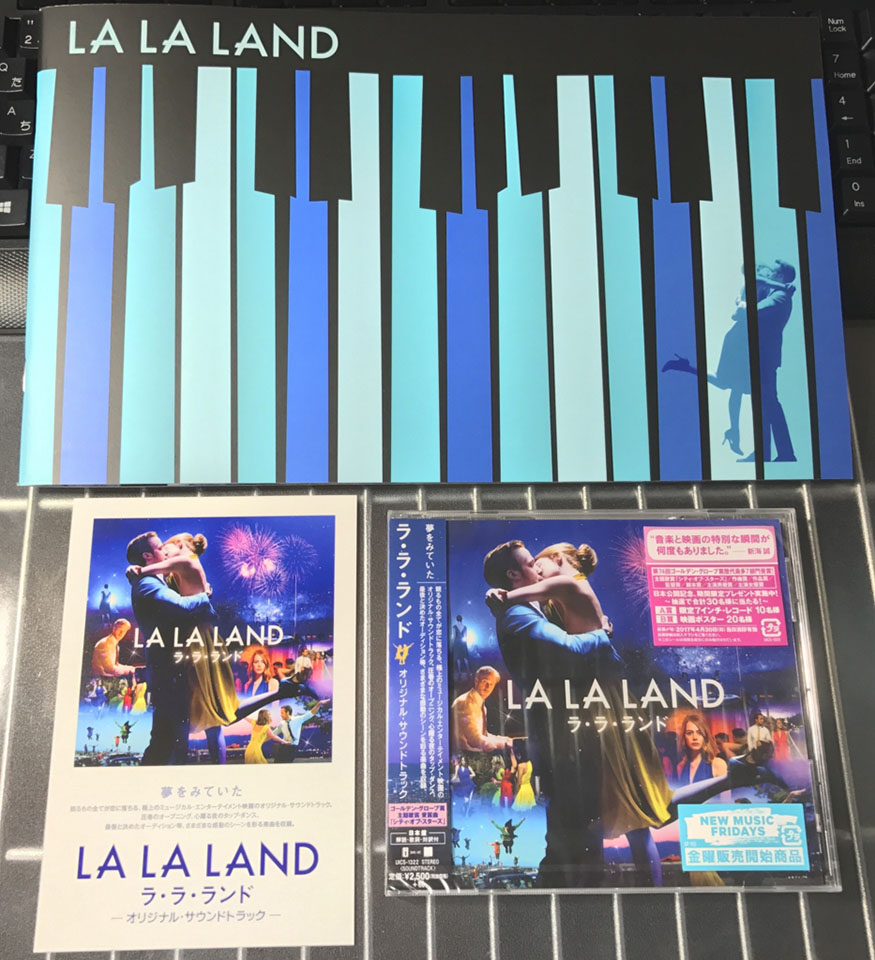

「La La Land ラ・ラ・ランド」を観た
話題沸騰のミュージカル映画「La La Land ラ・ラ・ランド」を観た。

ある程度いったらネタバレを書くので、未見の人は読み進めるの注意。
スクロール量を稼ぐために写真とか
これから話していくけど最高にブチアガるミュージカル映画だったので、久しぶりに映画のパンフレットを買い、サントラも買ってしまった。

アア〜、本当に良い…。
サントラは対訳が付いていて、映画の裏側についてもある程度触れられているのでオススメ。

それではネタバレあらすじ解説 & レビューに入ります
それではあらすじに入る。
…といっても、観終わってから調べたら以下の記事が分かりやすくあらすじが書かれていて、映画を観て感じたことについてもドンズバにまとまっちゃっていたので、何かコピペブログ並に同じことしか書けないと思うんだけど、それでも自分の言葉で吐き出したくなるくらいに色々と感じたので、書き散らしてみようと思う。
主人公はライアン・ゴズリング演じるセバスチャンと、エマ・ストーン演じるミアの二人。
冬
二人が初めて出会うのは、ロサンゼルスの渋滞するハイウェイ。このオープニングのミュージカルシーンはワンカットで撮影したかのように編集されており、一気に心が掴まれる (パンフレットによると、実際は2日間撮影した3つのフッテージを1つに繋げているみたい)。サントラ1曲目の Another Day Of Sun が本当に最高。
ミアは女優を目指して、ワーナーが所有するスタジオのコーヒーショップでバイトをしながら、オーディションに挑戦し続けている。この日も渋滞の中でオーディションの台本を確認していたのだが、発進に遅れて後ろのクルマにクラクションを鳴らされてしまう。このクルマに乗っていたのが、将来はロサンゼルスでジャズバーを開くことを夢見るピアニストのセバスチャンであった。
ミアは数々のオーディションに落ちまくり、演技中に邪魔が入ったり、オーディション直前に洋服を汚されたりと、あんまりツイていない。
セバスチャンも、自分が信じるジャズを広めたいばかりに、少々気難しい性格。姉からは定職に就いて結婚しろと急かされる。
ミアは同じく女優を目指すルームメイトたちと、乗り気でないパーティに参加する。ここでのミュージカルシーン Someone In The Crowd も最高。このあたりで、この映画は「踊るシーンと通常のシーン」をハッキリと区別しておらず、またその人の心情を描くためにシームレスにミュージカルシーンに入っていく特徴に気が付く。ミュージカルをやるための映画、ではなく、ストーリー本線の中で感情を表現するためにミュージカルを使っている、という感じがハッキリしてくる。
ドンチャン騒ぎの中でやっぱり気が乗らないミアは、パーティ会場を一人あとにすると、自分のプリウス (ハリウッドでエコの象徴としてプリウスが一時期流行った) が駐禁で移動されている。仕方なくフラフラと街を歩き、何気なく聞こえたピアノの音に誘われてレストランに立ち寄る。
そのレストランは、J・K・シモンズ演じるビルのレストランで、ピアノの音の主はセバスチャンであった。セバスチャンはビルからクリスマスソングを演奏しろと言われていたが、自分の思うジャズ以外を演奏するのが嫌で、自分の曲を弾きまくってしまい、クビになってしまう。
ミアはセバスチャンの演奏を聴いて心を動かされるも、クビを言い渡された直後のセバスチャンは不機嫌で、話しかけようとしたミアを無視して去ってしまう。映画の予告編で出てきたキスシーンかな？と思いきやキスせず去るので、おや？！と思ったシーン。w
春
それからしばらくした春のある日、またも気が乗らないパーティにお呼ばれしたミアは、そこで A-Ha の Take On Me をやる気なさげに演奏するセバスチャンに出会う。セバスチャンもミアに気付くが、パーティの BGM を演奏するためのバイト。ミアから A Flock Of Seagulls の I Ran (A-Ha のようなポップ系の曲) をリクエストされ、嫌々演奏する。
度々顔を合わせる二人は、ひょんなことから二人揃って会場を抜け出し、夕焼けが見える丘でお互いの思いを歌い合う。A Lovely Night も長いワンカットで二人のダンスが披露されており、とてもグッとくる。
その後、セバスチャンはバイト中のミアの元を訪れ、ハリウッド界隈をブラブラしながら、女優を目指すきっかけや、ジャズの話で盛り上がる。初めはジャズに思い入れのないミアであったが、セバスチャンに連れて行かれたジャズバーで本物のジャズを聞き、セバスチャンの熱い思いを聞いてジャズやアドリブ演奏の面白さを知った。
ミアがオーディションを受けるドラマが「理由なき反抗」の影響を受けていると聞いたセバスチャンは、「良い映画だ、観たことないなら近所の名画座 (実在した劇場「リベルト」) でやってるから月曜に観に行こう」と約束する。しかしミアはその日、付き合い始めのグレッグとのディナーが入っており、仕方なくディナーに出席する。しかしどうしてもセバスチャンのことが気になったミアは、ついにディナーを抜け出してセバスチャンが待つ劇場に走り出してしまった。
映画を観ながら手を繋ぎ、キスをしかけたその時、フィルムが焼けてしまって映画が中断。水を差されてしまった二人は映画の続きということで、「理由なき反抗」に登場したグリフィス天文台に向かい、歌い踊りながら初めてのキスをする。ココの宇宙空間で踊るシーケンスはいささか驚いた。w
夏
付き合い始めた二人は色々なところにデートする。ミアの家の前でセバスチャンがクラクションを鳴らして呼び出す感じとか、付き合いたてな感じがとても良い。
セバスチャンの提案で脚本を書くようになったミアは、一人芝居の計画を立て始める。一方のセバスチャンは、ミアから「店の名前は Seb's にしたら？」と提案されるが、尊敬するチャーリー・パーカーにちなんだ「Chicken On A Stick」にするんだと聞かない。このあたりに、自分の夢に対して周りの意見や情勢を取り入れられる柔軟さがあるかどうか、という二人の対比が見える。
一方のセバスチャンも、ミアが母親と電話する会話から、自分の夢を叶えるにはお金が足りないことを再自覚し、かつてのジャズバンド仲間であるキース (ジョン・レジェンド) の誘いに乗ってバンドを始める。そのバンドはジャズにダンスミュージックを混ぜたようなミクスチャーで、古き良きジャズを好むセバスチャンは違和感を抱いた。だがキースに「ジャズを広めたいというなら、まずは聞いてもらわなくてはいけない。お前が好きなジャズマンは皆革命を起こした、過去を変えた人達だ。それなのにお前は過去に囚われすぎている」と言われ、一定の納得感を得てバンドに参加することにした。
自分の趣味・主張を貫くことは良いが、それを広めようとするなら、伝わるように工夫しなくちゃいけない。そのためには自分が好きなことだけをただただやっているだけではダメなときもある。キースの言い分はもっともで、そうやって作った曲 Start A Fire は、見事にジャズのエッセンスを取り入れつつ、若者にもウケる音を使い、だけど自分の主張は歌に盛り込む、という理想的な曲になっていた。セバスチャンはこのバンドのライブにミアを招待したが、ミアはセバスチャンが当初語っていた方向性と異なるバンドを目の当たりにして違和感を覚える。
秋
稼ぐために始めたバンド「Messengers」は幸いにもヒットし、ロングツアーが敢行されていた。セバスチャンの家に転がり込んでいたミアは一人芝居の準備を着々とこなす中、セバスチャンはツアーのために各地を飛び回り、遠距離状態が続いていた。
それでもセバスチャンは、合間を見てミアのためにサプライズで家に戻り、ディナーを用意した。
長期間のツアーになるため、ミアによかったら付いてきてほしいとお願いするセバスチャンだが、一人芝居の公演を2週間後に控えたミアはそれを断る。そして「自分の夢とは異なるバンドに長く時間を取られていて、それでいいのか」と反論するミア。セバスチャンは稼ぐためと割り切っていたものの、自分が定まっていないところを突かれてしまった。とっさに「ぼくに成功してほしくないからそう言うのか」と反論し、二人はケンカ別れしてしまう。
ミアの一人芝居の舞台はガラガラ、舞台袖では数少ない観客からの酷評が聞こえてしまい、完全に心が折れてしまう。バンドの写真撮影のために芝居を見に行けなかったセバスチャンは、公演後ようやく劇場に辿り着くが、ミアはセバスチャンを振り切って実家に帰ってしまう。
このシーンも、ミアの場合は付き合い始めのグレッグとのディナーをブチ壊してでもセバスチャンの元に行ったのに、セバスチャンはバンドの写真撮影を断ってミアのところに駆けつけられなかったあたりで、二人の性格や考え方の対比が見える。楽しいディナーを台無しにして、グレッグとグレッグの兄さん夫婦に気まずい思いをさせるミアが正しいとか、セバスチャンが仕事を優先して恋人を優先しなかったから悪いとか、どっちが良いという話ではないが、この違いはどういう未来になるか、と考えると、このシーンも重要な分岐点になる。
ミアが出て行ってしまい、一人ベッドに寝転がるセバスチャン。そんなときセバスチャンの元に「ミアをオーディションに呼びたい」という電話がかかってくる。ミアの電話に繋がらず、同棲していたセバスチャンの番号をどこかで仕入れたのだろう。セバスチャンはミアが話していた思い出話から、ネバダにあるミアの自宅を探し、クルマのクラクションをガンガン鳴らしてミアを呼び出す。セバスチャンに「絶対オーディションに出るべきだ」と強く奨められたミアは、覚悟を決めてオーディション会場に向かい、アドリブ芝居を見せる。ここで歌う The Fools Who Dream はとても良い。
オーディションで好感触を得たミア。ケンカ別れしていたほとぼりが冷めた二人は、初めて歌い踊った丘で今後のことを話し合う。オーディションが決まればミアはフランスでの撮影に入ってしまう。セバスチャンもバンドの契約が残っているため、もうしばらくツアーがある。二人はお互いの夢を優先するため、関係を保留にした。
5年後の冬
5年の間に、ミアはハリウッド女優として成功し、別の夫を持ち、子供にも恵まれていた。一方のセバスチャンも、ようやく念願だった自分の店のオープンにこぎつけたところだった。
ある日、ミアと夫は渋滞する高速道路を抜けて、時間を潰すために見つけたレストランに寄った。その店こそ、セバスチャンが立ち上げた店、「Seb's」だったのである。セバスチャンはかつてのミアのアドバイスを取り入れ、店の名前を「Seb's」にしていたのだ。
ちょうど自分がピアノを演奏するというときに、セバスチャンはミアが店に訪れていることに気が付く。セバスチャンは二人の思い出の曲 City Of Stars を弾き始め、「もし二人が別れていなかったら…」という空想・妄想のシーンに入っていく。
空想の中では、二人は初めて会ったレストランでいきなりキスを交わし (予告編で流れるシーンはココだった)、キースとは話もせず、ミアの一人舞台は満席でスタンディングオベーションの嵐。オーディションに受かってパリ行きが決まったミアにセバスチャンは付いていき、セバスチャンもパリで演奏家として仕事を始める。二人は子供に恵まれ、何気なく入ったジャズバーで二人で誰かのピアノ演奏を聴く…。
何かが違ったらそうなったかもしれない、という妄想が終わる。ミアの隣には自分ではなく違う旦那が座っていて、ピアノを弾いているのは自分。
静かに席を立つミア。店を出る際に振り返ったミアに、セバスチャンは寂しそうに笑みを送る。ミアも何か吹っ切れたように笑みを返し、店を後にする。ミアの姿が見えなくなり、笑みが消えたセバスチャンは、少ししてからまた演奏を始めるのであった。
このラストのセバスチャンの寂しげな笑顔のシーン、本当に名場面だと思う。あとで語る。
あらすじ終わり！！
あらすじのなかでちょくちょく感想も書いていたけど、とりあえずここまでであらすじ終わり。
感想
セバスチャンに共感しまくる
なんというか、自分の性格はセバスチャンに近いと思うところが多くて、頑固だし、人の意見を聞き入れようとしないしで、それがあまり良い結果をもたらさないことも勘付き始めているのだけど、なかなかそれまでの自分の生き方を変えられなくて悩んでいるところだったりする。顔は全然似てないブ男なので、セバスチャンみたいな「気難しい男」ではなく「面倒臭い奴」なのが悲しいところ。
そんなワケで、セバスチャンの気持ちに共感する部分が多くて、ラストは本当に辛くなった。
自分は店が持ちたいのか、ピアノが弾きたいのか、というと両方で、結構めんどくさい夢だ。ジャズの良さを広めてジャズの評価を変えられたらいいな、というくせに、キースのように「今の人達に聴いてもらえる工夫」とかするつもりはない。セバスチャンは自分を変えるつもりはないのだ。
一方のミアは、女優になる夢はブレていないけど、「脚本書いてみたら？」というセバスチャンのアドバイスを取り入れてやり方を工夫してみたり、案外柔軟性がある。セバスチャンは店の名前すら聞き入れず、譲らなかった。子供っぽいということもできるかもしれない。自分もそういうところがあるのですごく気持ちが分かる。
セバスチャンはセバスチャンで、「そうはいっても現実的にこれじゃ生活できないし…」と、夢と現実の間でなんとか折り合いをつけて、ある程度割り切って仕事をしたし、そのお金を使ってなんとか夢を叶えた。でも自分が好き勝手弾きたいという思いもある程度セーブして、自分よりも上手なピアニストを招き入れてお店の経営のことを考えていたりする様子が垣間見える。昔より丸くなったセバスチャンは、離れ離れになったミアのことを忘れずに (忘れられずに) 店の名前を「Seb's」にしている。
夢と現実の狭間で
お互いが夢を貫き通すには、二人は別れるしかなかった、というのは、妄想シーンの中でも同じ。妄想シーンの中で、セバスチャンは自分の店は持っていない。
これはミアの空想なのかセバスチャンの空想なのか、にもよるだろうけど、
- ミアの空想だとしたら、「セバスチャンがもう少し聞き入れの良い人だったら、自分の店のことは自然に諦めてくれて、私の夢のためにフランスに付いてきてくれたかもしれないなぁ」という願いだったかもしれないし、
- セバスチャンの空想だとしたら、「俺がもう少し聞き入れの良い人間だったら、将来のこと考えて自分の理想にももう少しポジティブに折り合いつけて、カミさんのこと大事にして生活してたかもしれないなぁ」という後悔だったかもしれない。
どっちの気持ちも分かるというか、どっちもそういう風に思っていた、という空想シーンなのかなとも思う。
要するにセバスチャンはちょっと頑固すぎたのだ。自分の夢が具体的すぎて、忠実すぎたと思うのだ。
なんというか、小さい頃にゲームが・プラレールが好きで、「大人になったら全部集めてやろう！！」みたいな夢をずっと持ち続けて、いざ大人になって稼いでゲーム集めました・プラレール山ほど家に並べました、さぁぼくの夢が叶いました！！って言ってて、「そのために彼女も後回しにして今独り身ですけど、どうです幸せですか？」って言われてるみたいな、なんか、夢は叶って成功は成功なんだけど、なんか悲しい成功っていうか。どうもセバスチャンから虚無感を感じてしまう。
ミアへの疑問
ミアの方は、紆余曲折するその過程が違うけど、現実でも妄想の中でも、自分の夢はちゃんと叶っている。正直な感覚で言うと、「セバスチャンが空想した夢はどうして叶わなかったのか」に対する現実的な理由と乖離は、映画でも描かれていて説明可能なんだけど、「ミアの夢はどうして叶ったのか」「空想の中でも同じ夢が実現しているのはなぜなのか」というところの説明が、少々苦しいと思う。男だからそう感じるんだろうか？
二人が喧嘩別れするシーンも、ミアは「自分の夢はどうしたの？」とセバスチャンを責めるが、ミアだってセバスチャンがお金のために割り切ってやっていることぐらい分かっていたはず。ミアも女優の道には直接繋がらないコーヒーショップのバイトをしているワケだし。
そうなると、ミアはそもそもセバスチャンに「店を持つ」という夢を本当に叶えてもらいたかったのか？ という疑問も出てくる。
ミアの場合、「女優という自分の夢のためについてきてくれる主夫」という存在であれば、セバスチャンでなくてもちゃんと代替可能な誰かに切り替えられる、というところの考え方が、セバスチャンとは違ったのかなと思う。
男は別名保存・女は上書き保存
「男は別名保存・女は上書き保存」とよく言うが、この映画はその違いが如実に表れていたと思う。
セバスチャンはミアのことをちゃんと忘れず、店の名前にミアとの思い出を残すが、ミアの方は店に入るまでセバスチャンのことを忘れていたかのような様子。出会って色々思い出しはしたけど、最後の去り際にミアが見せた笑顔は、「色々あったけどこれからもお互いの夢のためにやっていきまっしょい」的な、セバスチャンを完全に「過去の男」とした、吹っ切れたような別れの笑顔だったけど、セバスチャンの方は違った。
セバスチャンはついつい二人の思い出の曲を弾いちゃって、忘れようとしてたけど忘れられていなかった様子が表れてるし、ミアのために頑張って笑みを浮かべるけど、ミアの姿が見えなくなった瞬間の落ち込みようったらない。男の最後の強がりだ。ミアにとってみれば笑顔で自分を送り出してくれた元カレになるワケだが、セバスチャンはガンガンに後悔している。「店とかワガママ言わねえで彼女のこと考えときゃよかったー！」っていう取り返しのつかない後悔を誤魔化すように演奏に戻るけど、その姿がたまらなく切なくて辛い。というか自分に心当たりがありすぎて辛い。
純粋な夢と、仕事上の成功と、家庭の充実
自分の夢を叶えるのと、家庭の充実はトレードオフなのだろうか。
ここまで監督の話を出さなかったが、監督は「セッション」で知られるデミアン・チャゼル。彼は2014年に離婚しているらしく、その出来事が映画に反映されていることは想像に難くない。
先程も触れたが、「ミアが成功するには、旦那は家に入っていること」というのが、現実でも空想シーンでも共通して描かれているところ。これは逆にいうと、「セバスチャンが自分の夢を叶えるにはミアと別れないといけないし、ミアを選ぶなら自分の夢は諦めないといけない」というジレンマなのだ。
また、女優はプレイヤーであり、店の経営はマネージャー、というところでも、「現実的にお金が必要かどうか」という違いが多少あるようにも思う。資金繰りのことがあると、どうしても自分の夢を 100% 叶えるのは難しくなってくる。そのためには、セバスチャンの場合も「店には構わず女優をやってる奥さん」ではなかなかやっていけないだろう。
自分の夢を 100% 叶えるためには、それなりのトレードオフが必要で、何を諦めるかを間違うと物凄く後悔することになる。そんなことを強く思わされた。
自戒の念を抱いた
僕は最近転職をして、その理由は「自分がやりたいことをやりたいから」という勝手な理由だった。給料面では幸い微増しているが、自分にとって先の長い仕事としてやっていけるのか不安もある。
この映画は彼女と観に行っていて、セバスチャンに僕自身の境遇をダブらせて観てしまって、ラストに物凄く落ち込んだ。恥ずかしながらエンドクレジットの間ずっと涙が止まらなかった。
僕は仕事で拘束されそうになっていてもそれを投げ出して彼女の元に駆け付けたいと思う。自分の夢と彼女どっち取るのって言われたら、やっぱり彼女を取ると思う。
でも現実は、ついつい自分本意に考えてしまうことも多いし、そのために彼女に寂しい・辛い思いをさせていることもあるかもしれない。直接そういうことを言われたり、話したりしたことはほとんどないけど、「あの時こうしていたらなぁ…」と思うことはあって、そのことをすごく反省した。これじゃいけない、僕はララランドの現実ルートじゃなくて妄想ルートの方でオナシャス！！と思ったのである。
ミュージカル映画としては本当に素敵だった
ついセバスチャンへの共感にばかり触れてしまっていた。一部で「予告編詐欺」と言われるのも分かる。楽しいミュージカル映画だと思って観に行ってたらラストの衝撃でまるっきり違う映画のようにひっくり返されてしまうのである。
だが、たしかにミュージカル映画としての出来も素晴らしいのである。
「雨に唄えば」「バンド・ワゴン」「踊るニュウ・ヨーク」のような MGM 黄金期のハリウッドミュージカルと、「ロシュフォールの恋人たち」「シェルブールの雨傘」のようなフランスミュージカルを見事につまみ食いしていて、「あ、このカット、あの映画のあのシーンだよね！？」とオマージュに気が付くポイントが沢山ある。一歩間違うと「悪質なパクリ」になりうるギリギリのところまで、数々の名作をオマージュしている。
うがった見方をすれば、「名作の名シーンを真似しまくったのだから、一見カッコイイシーンが沢山出てきて、それがヒットするのも当然」という見方もできるかもしれない。過去の作品でヒットしたと証明されている手法を取り入れたのだから、ヒットするはずだろう、というか。
でもこの映画の場合は、「本当に映画が好きな人が撮った映画だ」ということがよく分かる。ミュージカルを知らない人が観ても入り込みやすい構成だし、他のミュージカル映画に興味が湧くであろう。知っている人は知っている人で、あの映画この映画のオマージュにニヤけられつつ、現代を舞台にした現実的なストーリーが絡んで十分に楽しめる。
個人的にはフランスミュージカルの「ダンスとかバラバラだけど皆が思い思いに踊ってる感じ」が好きなのだけど、ハリウッドという競争社会を表現するのにこのフランスミュージカルみたいな構成が意外と合っているようで、その点も良かった。
オマージュ元との比較動画
比較動画はこちらがオススメ。元になった映画も片っ端から観たくなりますなぁ〜。
- 参考 : 『ララランド』がオマージュしたミュージカル映画とのシーン比較 - アートコンサルタント/ディズニーとミュージカルのニュースサイト
- 参考 : http://front-row.jp/showbiz/46512/
デミアン・チャゼルすげぇ〜
「セッション」でも魂が震えたのだけど、この「ラ・ラ・ランド」でも物凄く心が揺さぶられた。きっと誰もが似たような経験はあって、自分のために生きる難しさとか、そのために大事な人を傷つけたこととか、それじゃあどこに折り合いをつけて生きていこうか、とか、色んなことを考えさせられながら、素敵なミュージカルシーンに圧倒された。
ミュージカル映画も恋愛映画も興味ない、という人でも、観てみたらきっと感じ方が変わるはず。おまけにジャズも好きになるはず。
まだまだ一般公開しているので、ぜひ観に行ってほしいと思う。
以上！